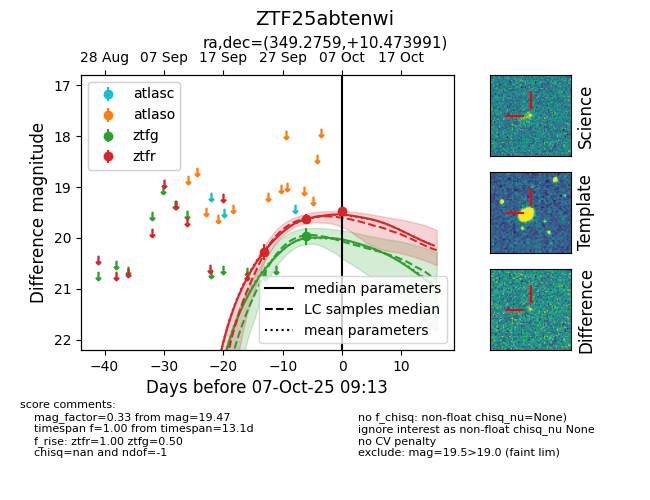
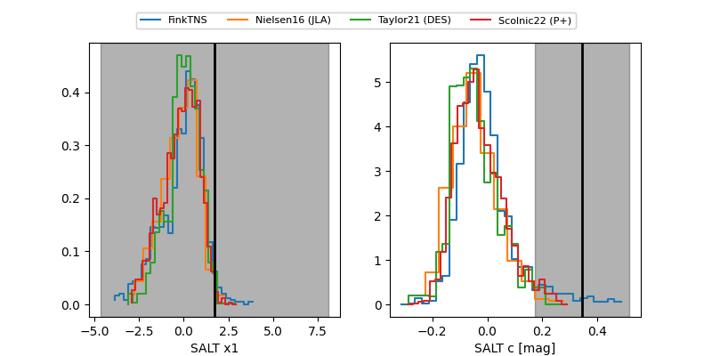

FINK: ZTF25abtenwi
Lasair: ZTF25abtenwi
ALeRCE: ZTF25abtenwi
ZTF25abtenwi (ztf,fink)
equatorial (ra, dec) = (349.2759,+10.47399)
galactic (l, b) = (88.4457,-45.98600)


last ztfg=19.97, ztfr=19.47
1 ztfg, 3 ztfr detections